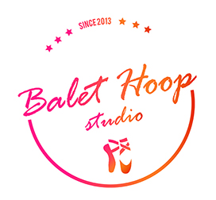

Creative Brief
About the organization
Balet Hoop is a creative ballet school founded in 2013. It offers classes of classical and modern ballet for recreational purposes to children and adults. Our mission is to provide students with the joy of artistic expression and creation, enable proper development of the body and teach them the basics of ballet, while they gain self-confidence and positive self-image. The owner of the studio is Marija Jevtic, ballerina and a pedagogist with more than 20 years of experience. She holds all the classes and workshops.
Our offer consists of several programs:
-ballet for children ages 3 to 11
-ballet for adults
-ballet workshops for children institutions
-program for mothers and daughters
Ballet workshops and Program for mothers and daughters are unique on the market in Belgrade.
Ballet workshops are aimed at kindergartens, children institutions, cultural centers, play centers etc. with the goal to promote the school and establish presence in new locations. In this way, the institution which hires Balet Hoop for running ballet workshops will get a new, interesting and fun program for their clients as an extra activity.
Program for mothers and daughters is a new way of teaching ballet basics to interested moms, who don’t have much time to dedicate to themselves. This way, they get to exercise while still taking care of their children and spend quality time with their daughters.
Ballet for adults and children both have programs which mix physical exercises with basics of classical and modern ballet. The focus is on good posture which helps with muscle and skeletal strenghtening. Younger students are divided into groups according to their age and follow the program which is made based on their abilities.
Vision and Objectives
The vision of the studio is to become a center for recreational ballet, with the focus on healthy lifestyle and creative expression. In the next 7 - 10 years the center could develop licensed programs and sell license to other ballet schools.
Marketing Material
Marketing material should look modern, fresh and easily recognizable.
The logo will contain full title of the school for better recognition: Balet Hoop. It will be used on business cards, website, marketing material and certifications offered by the studio.
Font of the logo: altered Rage Italic
Colors: Dark orange CMYK 9%, 83%, 100%, 1%; Orange CMYK 1%, 52%, 88%, 0%; Pink CMYK 0%, 92%, 47%, 0%; White and Rich Black CMYK 60%, 40%, 40%, 100%;
Style of the new brand: fresh, modern, elegant, artistic
Font for written documentation: Corbel and Rage Italic
Target Audience
Females ages 3 to 50 in the area of Belgrade city earning from 400 to 800 e. Interest in healthy active lifestyle and art.
Project Management
This project will be executed by Mila Iyibilek, freelance web and graphic designer. The deadline for the project is 24th April 2017.
Project schedule and deliverables
To see WBS click here.
To see Gantt chart click here.
Logo variants
The client received all deliverables, while these are just some of the materials for presentational purposes.

Brochure